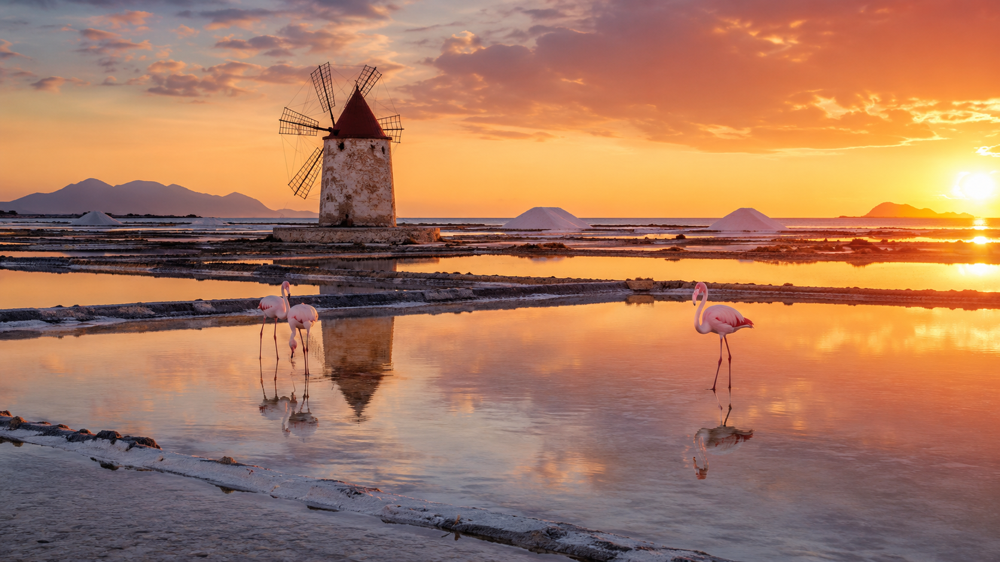
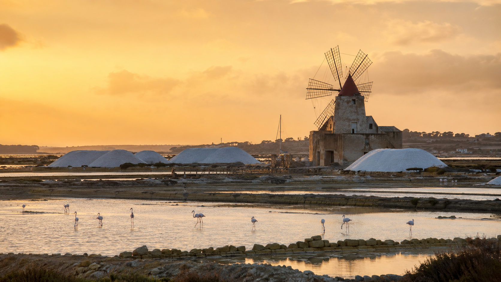
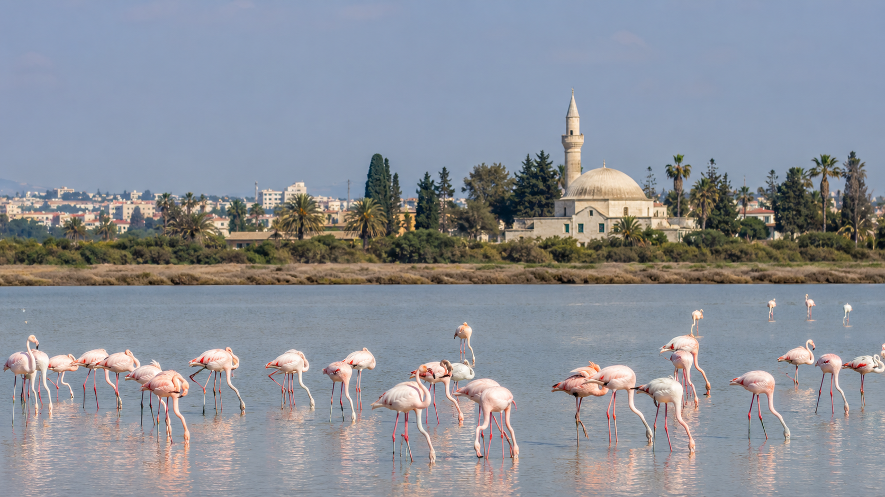
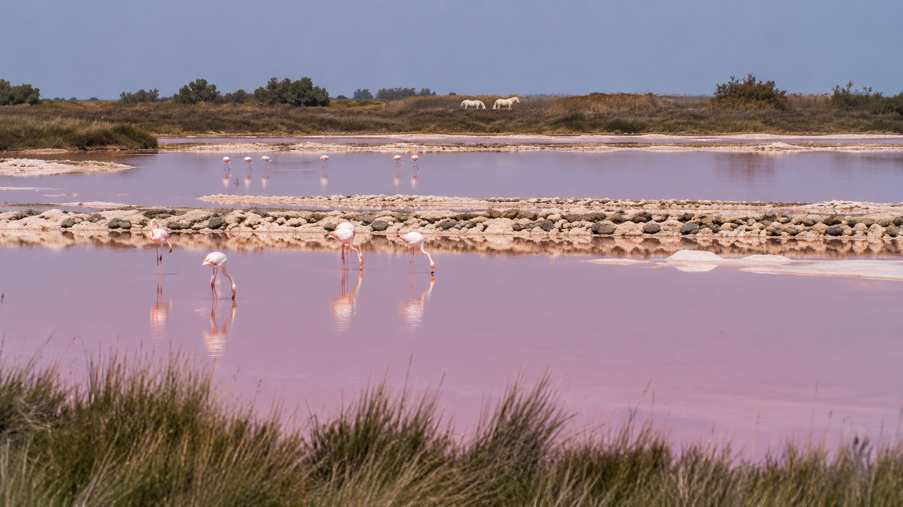
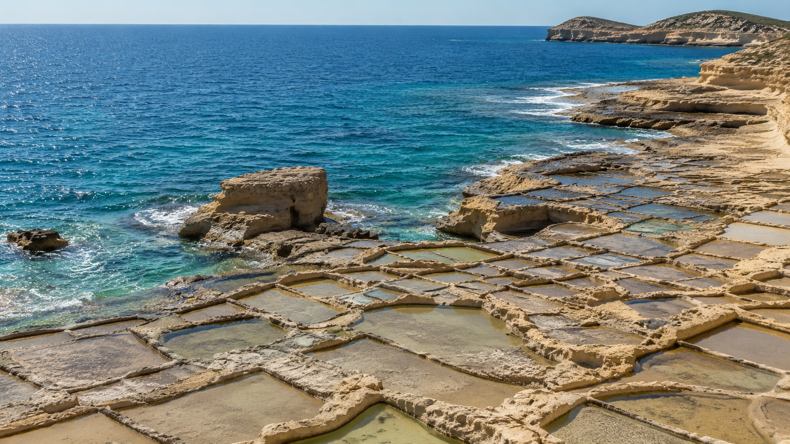
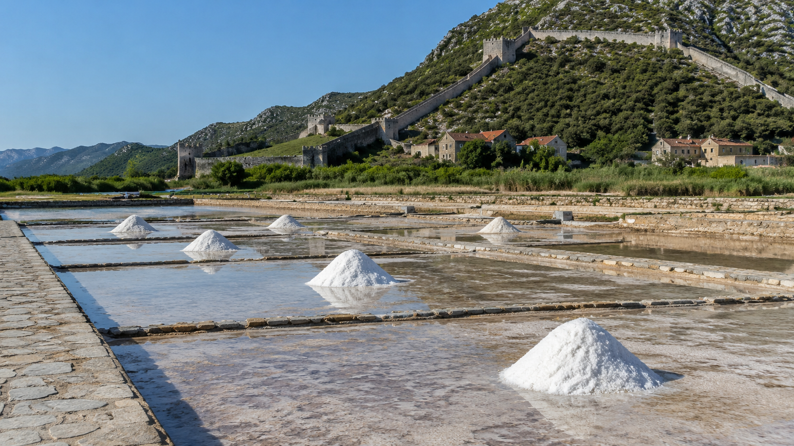

Soľné panvy nevolajú na turistov veľkými reklamami. Sú tiché, otvorené vetru a svetlu. Keď ich človek objaví pri západe slnka, pochopí, že aj obyčajná soľ môže mať svoju cestovateľskú mágiu.
More, slnko, vietor a čas
Princíp je jednoduchý a krásny zároveň. Morská voda sa vpustí do plytkých polí, slnko ju zohrieva, vietor vysušuje a človek čaká. Zostane soľ. Niekde biela ako sneh, inde jemne ružová od mikroorganizmov, ktoré menia farbu vody a lákajú plameniaky.
Pre cestovateľa sú tieto miesta výbornou protiváhou k rušným plážam. Dajú sa zaradiť do výletu autom, na bicykli, pri prechádzke alebo ako pokojná zastávka pred večerou.

Trapani a Paceco, Sicília: soľné panvy s veternými mlynmi
Medzi Trapani a Marsalou na západe Sicílie leží krajina, ktorá vyzerá, akoby patrila inému tempu. Plytké vodné plochy, staré veterné mlyny, biele kopy soli a večerné svetlo z nej robia jedno z najkrajších miest na pokojný výlet mimo pláže.
Najviac dáva zmysel prísť podvečer. Cez deň vie byť horúco a ostré svetlo zbytočne sploští farby. Pri západe slnka sa však panvy rozžiaria zlatom a ružovou. Ak plánuješ západnú Sicíliu, Trapani a Paceco sú presne ten typ miesta, ktoré sa oplatí nechať na pomalší večer.

Larnaka, Cyprus: plameniaky pár minút od letiska
Larnacké soľné jazero je jedno z najpraktickejších miest na pozorovanie plameniakov v Stredomorí. Leží len kúsok od letiska a pri správnom období môže byť krásnou prvou alebo poslednou zastávkou na Cypre.
Najzaujímavejšie býva v zime a skoro na jar, keď je vo vode život a plameniaky sa držia v okolí jazera. V lete môže byť jazero suchšie a zážitok úplne iný. Preto sa oplatí brať Larnaku ako sezónnu prírodnú tému, nie ako celoročnú istotu.

Camargue, Francúzsko: ružové vody, biele kone a divoký juh
Camargue je iné Stredomorie. Menej promenádové, viac veterné, mokraďové a divoké. Ružové soľné panvy pri Aigues-Mortes patria k miestam, kde človek veľmi rýchlo pochopí, že juh Francúzska nie je iba Azúrové pobrežie.
Plameniaky, kone, mokrade a veľké horizonty robia z Camargue výborný tip pre cestovateľov, ktorí chcú medzi mestami a plážami aj kus prírody. Najlepšie funguje autom alebo ako súčasť pomalšieho výletu po juhu Francúzska.

Gozo, Malta: kamenné soľné šachovnice pri mori
Na ostrove Gozo majú soľné panvy iný charakter. Nie sú to veľké ružové lagúny, ale kamenné geometrické políčka vytesané pri pobreží. Xwejni Salt Pans pôsobia ako prírodná šachovnica medzi skalami a morom.
Gozo je dobré zaradiť pri dlhšom pobyte na Malte. Samotné panvy nie sú celodenný program, ale krásna zastávka pri výlete po severe ostrova. Najlepšie vyniknú, keď sa nesnažíš stihnúť všetko a necháš si čas aj na pobrežie.

Ston, Chorvátsko: soľ, hradby a ustrice
Ston na juhu Chorvátska je známy hradbami, soľou a ustricami. Je to výborný príklad miesta, kde sa príroda, história a jedlo stretnú na malom priestore.
Ak ideš smerom na Pelješac alebo do Dubrovníka, Ston dáva veľký zmysel ako zastávka. Soľné panvy pridajú kontext, hradby výhľad a miestne ustrice príjemnú bodku. Nie je to veľkolepý rezortový zážitok, ale presne ten typ miesta, ktorý robí cestu pestrejšou.

Kedy ísť za soľnými panvami?
Najlepšie obdobie závisí od miesta. Pre farby a atmosféru funguje jar, začiatok leta, september a jeseň. Pre plameniaky treba sledovať sezónu a vodu, najmä pri Larnake a Camargue. Pre fotky je najlepšie mäkké svetlo ráno alebo večer.
V lete treba rátať s horúčavou, minimom tieňa a slaným vetrom. Voda, pokrývka hlavy a rozumný čas návštevy sú dôležitejšie než dlhý zoznam miest.
Prečo ma táto téma baví
Soľné panvy sú pre mňa tichá verzia Stredomoria. Nie sú hlučné, ale majú silnú atmosféru. Ukazujú, že more nemusí byť iba na kúpanie. Môže byť krajinou práce, vtákov, svetla, histórie a pomalého čakania.